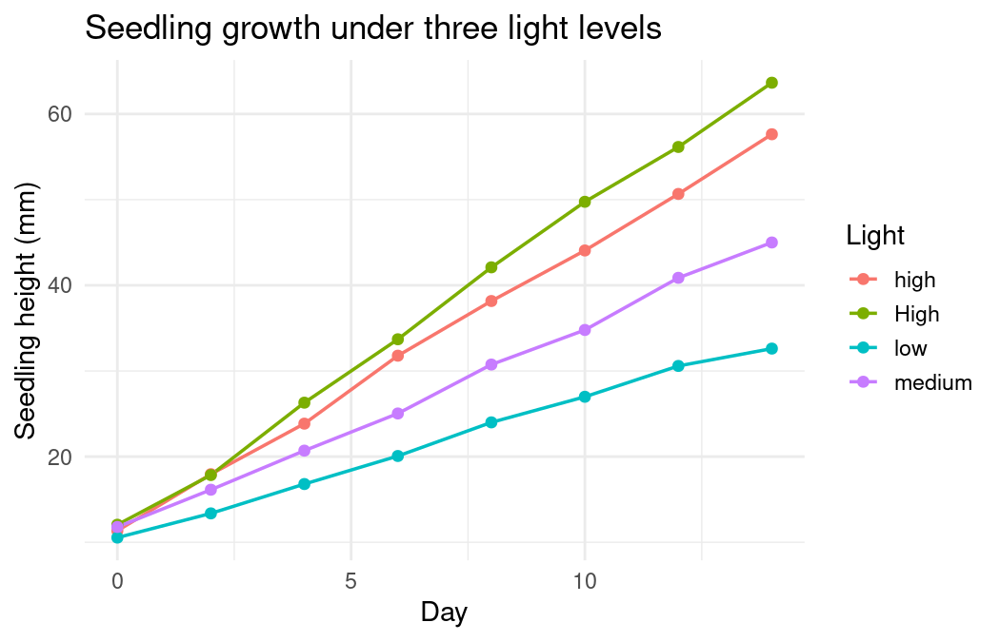
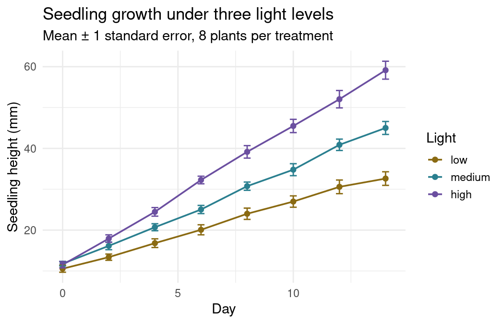

Exercise: watch an agent work
Goal
By the end of this exercise you should be able to:
- follow what a coding agent does in a session: where it reads files, where it writes them, where it runs commands, and where it asks you for permission,
- tell what the agent checked by itself and what it decided without asking,
- name concrete checks that you would make before trusting the result, using what you know about the experiment,
- sort chores from your own job by how easy the result is to check and how sensitive the data is, as a first step towards choosing your own project.
This exercise needs no installation and no account. You read a session; you do not run one. Installing comes in the next unit, Accounts and installation.
Before you start
- Have the lecture slides at hand, especially the slides on the agent loop and the two-question grid.
- Have something to write on: a text document, a spreadsheet or paper. You keep your answers.
- Optional: look at the example data,
seedlings.csv. It is synthetic (made up by a script), so nothing in it is real or personal. It has 192 rows: 24 pea seedlings (8 each under low, medium and high light), height in mm measured every second day from day 0 to day 14.
Worked example: read an annotated agent session
Below is a full session in which an agent turns seedlings.csv into a plot with an R script. It is written out in the style of Claude Code in a terminal; a Codex session looks much the same, with slightly different symbols and wording. The data, the final script and both plots are real. Your own sessions, once you have installed a tool, will look different in the details: agents do not give the same answer twice.
Read the whole session once without stopping. Then read it again with the questions in the next section.
How to read this. Lines starting with > are what the person typed. Lines starting with ● are the agent: either something it says, or a tool it uses (Read, Write, Update, Bash). Lines starting with ⎿ show the result of that tool. The numbers in the margin ([1], [2], …) are there so you can refer to steps in your answers.
[1] The person gives the task
The folder seedling-project contains one file, seedlings.csv. The person starts the agent in that folder and types:
> Make a line plot of mean seedling height per light treatment over time,
with error bars. There are three treatments. Use an R script so I can
rerun it, and save the figure as growth_plot.png.[2] The agent looks at the data
● I'll start by looking at the data file.
● Read(seedlings.csv)
⎿ Read 193 lines
"plant_id","treatment","day","height_mm"
"l01","low",0,12.2
"l01","low",2,13.2
"l01","low",4,20.1
"l01","low",6,22.3
"l01","low",8,26
… +187 lines
● The file is in long format: one row per plant per day, with columns
plant_id, treatment, day (0 to 14, every second day) and height_mm.
Plan:
1. Write plot_growth.R: read the CSV, compute mean and standard error
of height per treatment and day, draw one line per treatment.
2. Run it and look at the figure.[3] The agent writes a script
● Write(plot_growth.R)
⎿ Wrote 19 lines to plot_growth.R
1 library(ggplot2)
2
3 d <- read.csv("seedlings.csv")
4
5 summ <- aggregate(height_mm ~ treatment + day, data = d,
6 FUN = function(x) c(mean = mean(x), se = sd(x) / sqrt(length(x))))
7 summ <- do.call(data.frame, summ)
8 names(summ) <- c("treatment", "day", "mean", "se")
9
10 p <- ggplot(summ, aes(day, mean, colour = treatment)) +
11 geom_line(linewidth = 0.8) +
12 geom_point(size = 2) +
13 geom_errorbar(aes(ymin = mean - se, ymax = mean + se), width = 0.3) +
14 labs(x = "Day", y = "Seedling height (mm)", colour = "Light",
15 title = "Seedling growth under three light levels") +
16 theme_minimal(base_size = 14)
17
18 ggsave("growth_plot.png", p, width = 7, height = 4.5, dpi = 150)
19[4] The agent asks for permission to run it
● Bash(Rscript plot_growth.R)
╭─────────────────────────────────────────────────────────────────╮
│ Bash command │
│ │
│ Rscript plot_growth.R │
│ Run the plotting script to create growth_plot.png │
│ │
│ Do you want to proceed? │
│ ❯ 1. Yes │
│ 2. Yes, and don't ask again for Rscript commands in this │
│ folder │
│ 3. No, and tell Claude what to do differently (esc) │
╰─────────────────────────────────────────────────────────────────╯The person reads the command, sees that it only runs the script that was just written, and chooses 2.
⎿ (no output)[5] The agent looks at its own result and notices a problem
● The script ran without errors. Let me check the figure.
● Read(growth_plot.png)
⎿ Read image (63 KB)
● The legend shows four groups: "high", "High", "low" and "medium". You
said there are three treatments, so "High" and "high" are probably the
same treatment typed two ways. Let me count the labels and check for
missing values before changing anything.
● Bash(Rscript -e 'd <- read.csv("seedlings.csv"); print(table(d$treatment));
print(d[is.na(d$height_mm), ]); print(unique(d$plant_id[d$treatment == "High"]))')
⎿
high High low medium
48 16 64 64
plant_id treatment day height_mm
86 m03 medium 10 NA
[1] "h07" "h08"
● Findings:
- 16 rows (plants h07 and h08) are labelled "High"; the other high-light
plants use "high". Their plant IDs start with h like the others, so
they look like the same treatment.
- One height value is missing (plant m03, day 10).
- The first script did not say anything about the missing value:
aggregate() silently drops it.
I'll make the labels lower case, report the missing value explicitly,
and put the treatments in a sensible order (low, medium, high).[6] The agent fixes the script
● Update(plot_growth.R)
⎿ Updated plot_growth.R with 11 additions
3 d <- read.csv("seedlings.csv")
4 +
5 + # Treatment labels were typed inconsistently ("High" and "high"):
6 + # make them lower case so they form one group.
7 + d$treatment <- tolower(trimws(d$treatment))
8 + d$treatment <- factor(d$treatment, levels = c("low", "medium", "high"))
9 +
10 + # One measurement is missing; leave it out of the means.
11 + n_missing <- sum(is.na(d$height_mm))
12 + d <- d[!is.na(d$height_mm), ]
13 + message("Rows with missing height removed: ", n_missing)
14(The agent also added a line that prints how many plants there are per treatment, a subtitle, and fixed colours. The final script is in data/plot_growth.R.)
[7] The agent runs it again and checks again
● Bash(Rscript plot_growth.R)
⎿ Rows with missing height removed: 1
Plants per treatment: low 8, medium 8, high 8
● Read(growth_plot.png)
⎿ Read image (62 KB)
[8] The agent reports back
● Done. growth_plot.png now shows three treatments (low, medium, high),
mean height ± 1 standard error, 8 plants per treatment.
Files:
- plot_growth.R: the script (rerun with: Rscript plot_growth.R)
- growth_plot.png: the figure
Decisions I made that you should check:
1. I treated "High" (plants h07, h08) as the same treatment as "high".
If they were a separate condition, tell me and I'll plot them apart.
2. One missing height (plant m03, day 10) was left out, so that point
is the mean of 7 plants, not 8.
3. Error bars are standard errors, not standard deviations.Questions on the session
Write short answers. Refer to steps by their number, for example “in [5]”.
Q1. Reading. In which steps did the agent read something, and what did it read? (Hint: it read more than the CSV.)
Q2. Permission. Where did the agent ask for permission, and what exactly did it want to do? The agent ran Rscript three times in total, but asked only once. Why? Would you have chosen option 1 or option 2, and why?
Q3. Checking. What did the agent check on its own initiative, without being asked? What made it suspicious in the first place?
Q4. Decisions. List the decisions the agent made without asking you. For each one, say whether you are happy for an agent to make that kind of decision alone, or whether it should have stopped and asked.
Q5. Your own checks. You are the teacher who ran this lab. Name three concrete checks you would make before you show this plot to students. Be specific: what would you open, what would you compare, what number would you expect?
Q6. Chat versus agent. Imagine doing the same task in a chat window. Which of steps [2] to [8] would you have had to do yourself?
Check the result
You do not have to trust the plot either. Do at least two of these checks; they need only a spreadsheet program.
- Count the labels. Open
seedlings.csvin Excel, LibreOffice or Numbers. Filter or sort thetreatmentcolumn. Do you see 48 rows ofhighand 16 ofHigh, as the agent said in step [5]? Which plants are theHighones? - Recompute one point by hand. Filter to
lowandday= 0. Take the mean of the 8 heights. The plot shows the firstlowpoint at a little over 10 mm. Do you agree? (Use the spreadsheet’sAVERAGEfunction.) - Find the missing value. Find the row with an empty
height_mm. Is it the plant and day the agent reported in step [8]? - Look at the “High” plants. Compare the day 14 heights of h07 and h08 with the other six high-light plants. Are they similar, or do they stand out? What would that make you ask the student who typed them?
Q1. [2] read seedlings.csv; [5] read growth_plot.png (it looked at its own figure) and read the CSV again via a small R command; [7] read growth_plot.png again. In [6] the agent edited plot_growth.R, which means it had the file’s contents in front of it.
Q2. Only in [4], to run Rscript plot_growth.R. The person chose option 2 (“don’t ask again for Rscript commands in this folder”), so the later Rscript runs in [5] and [7] went ahead without a prompt. Option 2 is reasonable here because every Rscript call stays inside a folder of example data. With your own data, option 1 (ask every time) is the safer choice until you trust the setup. Note that in Codex the default limits are different: it usually runs commands inside the project folder without asking and asks before going outside it. Terminal survival kit covers how to set these limits.
Q3. It looked at the figure, saw four groups where the task said three, counted rows per label, looked for missing values, and listed which plants carried the odd label. After the fix it printed the number of plants per treatment and looked at the figure again. What made it suspicious: the person had written “There are three treatments” in the prompt. Without that sentence, a four-line plot would have looked fine to the agent.
Q4. (a) Merging High into high. (b) Dropping the missing value. (c) Using standard errors rather than standard deviations. (d) Choosing the order and colours of the treatments. (c) and (d) are fine to decide alone, as long as they are reported. (a) changes the meaning of the data and arguably should have been a question (“Should I merge these?”) rather than a decision reported afterwards. A prompt can ask for this: “If the data disagree with what I said, stop and ask before changing anything.”
Q5. Good answers are concrete, for example: count the labels in the CSV (48 + 16 = 64 high rows); recompute one plotted mean by hand (low, day 0: mean 10.55 mm); check that h07 and h08 really were under the same lamp (their day 14 heights, 59.8 and 67.5 mm, are among the tallest, which could mean a different lamp, a different student measuring, or chance); check that the y-axis unit (mm) matches how heights were measured; check that “8 plants per treatment” in the subtitle is honest given the missing value; check that the error bars are what you would show students (SE or SD).
Q6. In a chat window you would have done almost all of it: describe the file (the chat cannot see it), copy the script into a file, run it, look at the plot, notice the fourth group yourself, find the cause, paste it back, copy the corrected script, run it again. The agent did [2] to [7]; you would still do the judging in [8].
Optional: run the same session yourself, after the next unit
Once you have installed a tool in Accounts and installation, you can try this yourself. Make a new empty folder, copy seedlings.csv into it, start the agent in that folder and give it the same prompt.
Start it in the folder by typing claude, then paste:
Make a line plot of mean seedling height per light treatment over time,
with error bars. There are three treatments. Use an R script so I can
rerun it, and save the figure as growth_plot.png.Start it in the folder by typing codex, then paste:
Make a line plot of mean seedling height per light treatment over time,
with error bars. There are three treatments. Use an R script so I can
rerun it, and save the figure as growth_plot.png.You need R with the ggplot2 package. If you do not have it yet, wait until Terminal survival kit, where the agent helps you install it. Expect a different session: perhaps the agent asks about High before merging, perhaps it does not notice at all. Either way, do the checks above.
Try it on something of yours: sort five chores
You choose your own project at the end of Part 1, in Privacy, ethics and safety. This task prepares that choice. It uses no data at all, only a description of your work, so it is privacy-safe. Do not paste anything from these chores into a chat or an agent yet.
Step 1. List five chores. Think of the last month. Write down five tasks from your own job that took time, involved files, and felt like they were not the core of your work. Write one line each, concrete enough that a colleague would know what you mean. Examples:
- “Merge the exam results from four teaching assistants’ spreadsheets into one.”
- “Redraw Figure 3 of the manuscript with the new batch included.”
- “Get the sample size from each of the 30 papers in my review into one table.”
- “Rename 400 microscope images from the plate map.”
- “Put the reading list, schedule and slides for my seminar course on one page.”
Step 2. Rate each chore on two questions.
- How easy is it to check the result? Easy: you could tell right from wrong in a few minutes (a known total, a figure you know well, a page you can look at). Hard: checking would take nearly as long as doing it, or you are not sure what right looks like.
- How sensitive is the data? Low: public, synthetic or your own non-personal material. High: personal data about students, patients or staff, unpublished data under agreement, anything your university restricts.
Step 3. Place them on the grid. Copy this table and fill it in.
| Chore | Check: easy or hard? | Sensitivity: low or high? | Quadrant |
|---|---|---|---|
| 1. | |||
| 2. | |||
| 3. | |||
| 4. | |||
| 5. |
Use the quadrants from the lecture:
| Low sensitivity | High sensitivity | |
|---|---|---|
| Easy to check | Start here | Later, with care (after the privacy unit) |
| Hard to check | Possible, check hard (needs a checking plan) | Not for now |
Step 4. Note one thing per chore. For each chore in Start here or Possible, check hard, write one sentence: how would you check the result? For example, “the total number of students must still be 212”, or “I compare five random rows with the PDFs”.
Privacy reminder. Until the Privacy, ethics and safety unit, do not give an agent or a chat any real data about students, patients or staff, and do not start an agent in your home folder.
What you should have now
- Your answers to Q1 to Q6, and at least two checks of the plot done by hand.
- Your chore grid: five chores from your own job, each rated for how easy it is to check and how sensitive the data is, with one checking idea for each chore in the top-left and bottom-left squares.
Keep the grid. You will come back to it at the end of Part 1, when you choose the own project that runs through the rest of the course.